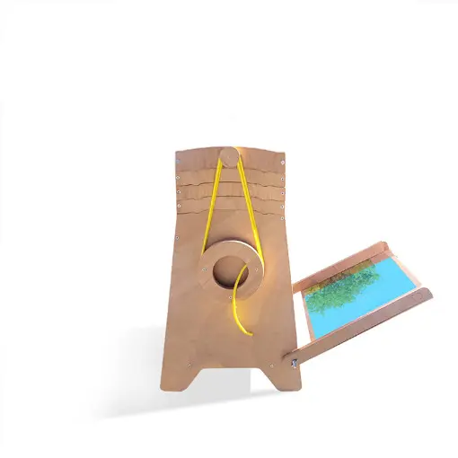
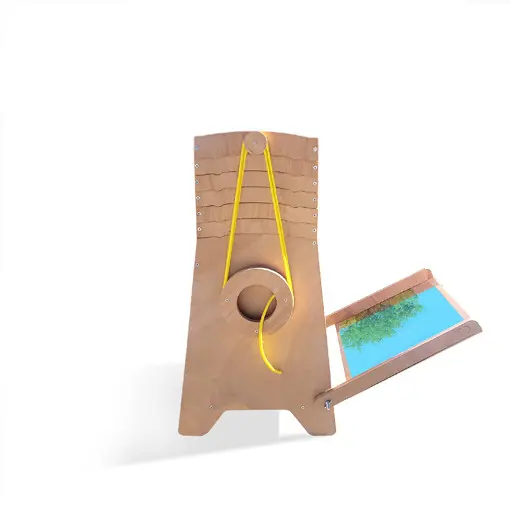
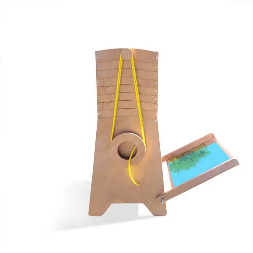

Un kit de séchoir solaire complet en fonction de vos besoin

Kit small
Description : sèche xkg de plantes en ~x heures
Dimension : 20 x 20 x 100
Prix : 300

Kit medium
Description : sèche xkg de plantes en ~x heures
Dimension : 20 x 20 x 100
Prix : 300

Kit large
Description : sèche xkg de plantes en ~x heures
Dimension : 20 x 20 x 100
Prix : 300
Pièces détachés
Des pièces détachés pour pouvoir réparer ou remplacer
Électronique
Description : Les composantes électronique du séchoirs
Prix : 70
Caisson en bois
Description : Le caisson principale du séchoir
Prix : 100
Panneau solaire
Description : Le panneau solaire qui alimente le séchoir
Prix : 150
Pourquoi un séchoir
Sécher ce qu'on cultive ou cueille est important pour la conservation sur le long terme.
Un séchoir permet un séchage plus rapide et controlé, à l'abris de la météo.
Pourquoi choisir notre séchoir
Notre séchoir permet un suivi détaillé du séchage et un contrôle précis, ce qui permet
d'assurer la conservation de la qualité des produits.
Les services associés
SAV, aide au montage et mise à disposition de guide de montage, analyse des données récupérés
et évolution des méthodes de séchage au besoin.